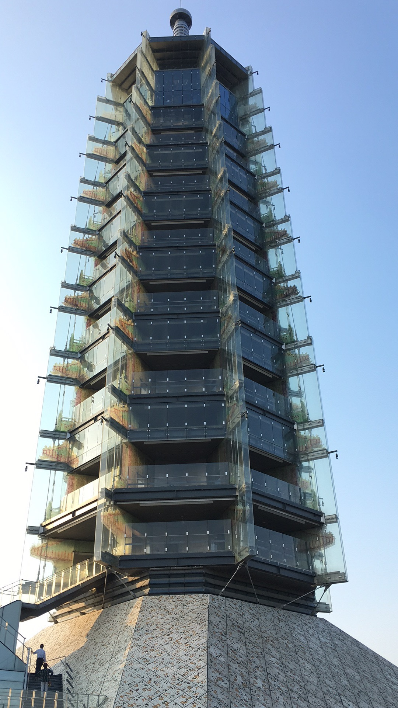

Hi, I am Ballball (Yiqing Zhang), welcome to visit my website.
采蓝莓（Picking strawberries）
今天，我放假了。天气阴阴的，没有骄阳,也没有暴雨。妈妈高兴的对我说：“刘阿姨今天约我们采蓝莓，蓝莓田在溧水。”我兴奋极了，心想：蓝莓本来就贵，如果采到上等蓝莓的话，就挣“翻”了！于是我上网查了资料：
一、好的蓝莓外面一定有很多白霜；
二、好的蓝莓不硬也不软；
三、好的蓝莓又大又甜。
我们开车约四十分钟，来到了溧水的一个村子。村子里有很多山丘，放眼望去，眼前像一片绿色的海洋。我们上了一个小山丘，越过一条清澈见底小溪。我看见了一大片蓝莓果树，它们不像高大的苹果树，也不像矮小的草莓。这是一种灌木丛，高约一点五米，一棵蓝莓有十几枝，每枝吊着几十个蓝莓，像鞭炮一样，有蓝的、红的、青的。蓝的甜中带酸，红的和青的还未成熟，都不能成。听说这里的蓝莓是无公害的，我还看见了一些黄色的瓶子，我询问了蓝莓田的主人，才知道原来这些黄色瓶子是用来防虫的，这是一种物理防虫方法。这里的蓝莓很干净，蓝莓不用洗就可以直接吃，它具有护眼、抗氧化、降低血糖、增强免疫力等功效，它是一种对人类健康有益的果实。
和妈妈以及刘阿姨等人在田间穿梭，我们你一言我一语，十分开心，享受着采摘果实的乐趣，并且大家还讨论着哪棵树上果子结的大，哪棵树上的果子结的甜。时间一点一点地过去，我和妈妈采了六七斤蓝莓，放入了六个塑料盒子中。
原来乡间的生活如此的自由自在，无拘无束，我不禁想起了一句古诗：
“牧童归去横牛背，短笛无腔信口吹”
((2020-09-01 at Nanjing)
Dabaoen Temple

(2017-10-07 at Nanjing)